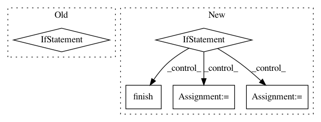

65f7aa962741a11aa2db3c77ce77efacb1219418,tensorboard/plugins/beholder/beholder.py,Beholder,_update_recording,#Beholder#Any#Any#,126
Before Change
is_recording = config["is_recording"]
filename = self.PLUGIN_LOGDIR + "/video-{}.mp4".format(time.time())
if is_recording:
if self.video_writer is None or frame.shape != self.video_writer.size:
try:
self.video_writer = video_writing.FFMPEG_VideoWriter(filename,
frame.shape,
15)
except OSError:
message = ("Either ffmpeg is not installed, or something else went "
"wrong. Saving individual frames to disk instead.")
print(message)
self.video_writer = video_writing.PNGWriter(self.PLUGIN_LOGDIR,
frame.shape)
self.video_writer.write_frame(frame)
elif not is_recording and self.video_writer is not None:
self.video_writer.close()
self.video_writer = None
// TODO: blanket try and except for production? I don"t someone"s script to die
// after weeks of running because of a visualization.
def update(self, session, arrays=None, frame=None):
"""Creates a frame and writes it to disk.
Args:
After Change
// pylint: disable=redefined-variable-type
should_record = config["is_recording"]
if should_record:
if not self.is_recording:
self.is_recording = True
tf.logging.info(
"Starting recording using %s",
self.video_writer.current_output().name())
self.video_writer.write_frame(frame)
elif self.is_recording:
self.is_recording = False
self.video_writer.finish()
tf.logging.info("Finished recording")
// TODO: blanket try and except for production? I don"t someone"s script to die
// after weeks of running because of a visualization.
def update(self, session, arrays=None, frame=None):
"""Creates a frame and writes it to disk.
Args:
In pattern: SUPERPATTERN
Frequency: 3
Non-data size: 5
Instances
Project Name: tensorflow/tensorboard
Commit Name: 65f7aa962741a11aa2db3c77ce77efacb1219418
Time: 2018-03-15
Author: nfelt@users.noreply.github.com
File Name: tensorboard/plugins/beholder/beholder.py
Class Name: Beholder
Method Name: _update_recording
Project Name: uber/petastorm
Commit Name: 5818901a8b1b2301d7264dc7de58730bc008e5ef
Time: 2020-12-11
Author: fardin@uber.com
File Name: petastorm/pytorch.py
Class Name: BatchedDataLoader
Method Name: _iter_impl
Project Name: wenwei202/iss-rnns
Commit Name: b519cde79a37ac166bb2ac8e42134bb09d8c9e0f
Time: 2016-07-25
Author: seominjoon@gmail.com
File Name: model/base_model.py
Class Name: BaseRunner
Method Name: eval